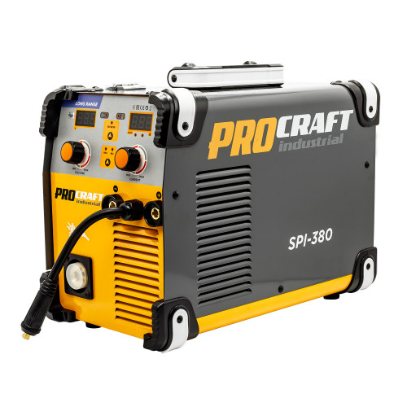
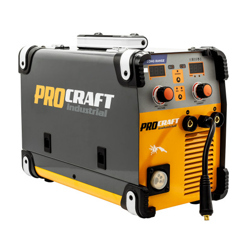
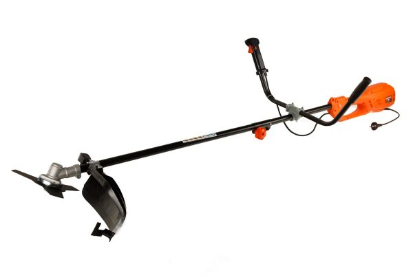
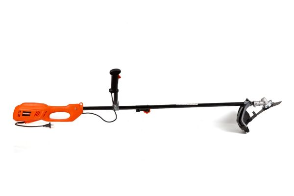

Procraft Industrial SPI380 Long Range: Інверторний Зварювальний Напівавтомат


Опис Товару
Інверторний зварювальний напівавтомат Procraft industrial SPI380 має набір
унікальних функцій і характеристик:
може працювати в мережі напругою 240 Вт;
має систему "гарячого старту";
забезпечує швидкий початок зварювальних робіт без залипання електрода;
цифрове табло, що забезпечує швидке налаштування потрібного режиму та візуальний контроль за роботою;
посилені кабелі та клеми забезпечують швидке підключення до мережі та проведення безперебійного
зварювання;
надійний металевий корпус із ручкою дає можливість працювати як у приміщенні, так і на вулиці.
Інверторний зварювальний напівавтомат Procraft industrial SPI380 має компактні габарити та може легко
переноситися у потрібне місце завдяки наявності ручки на верхній кришці металевого корпусу.
Вентилятор забезпечує гарне обдування апарату, що виключає його перегрів під час зварювання.
Пристрій підходить для професійного та побутового використання.
Технічні характеристики
Ізоляція
F
Амперне навантаження
40 - 380 (MIG) / 40 - 380 (MMA), А
Коефіцієнт корисної дії
0,73
Коефіцієнт потужності
0,8
Номінальна тривалість циклу
Х=30% 380 А/21 В; Х=60% - 117А/19 В
Робоча напруга
16 - 21 (MIG), 21.6 - 26.4 (MMA)
Розміри (ДхШхВ)
515*380*420 мм
Фаза
1 ф
Холоста напруга
55 В
Напруга
220 В ± 15%
Частота струму
50-60 Гц
Вага
11,4 Кг
Номінальна потужність
6,2 (MIG) / 7.2 (MMA) кВт
Доставка
Безкоштовна доставка до відділення "Нової пошти" при замовленні від 710 грн
Адресна доставка "Новою поштою"
Гарантія
14 днів на обмін
Офіційна гарантія від виробника
24 місяців гарантії
24 місяців гарантії на продукцію Industrial
Оплата
Післяплатою в відділенні
На розрахунковий рахунок ПриватБанк
Оплата карткою, за допомогою LiqPay
Тример електричний для трави Rebiner RGT-2350


Тример електричний Rebiner RGT-2350 відрізняється ергономічним дизайном і невеликою вагою. Призначений для
підрізання трави, бур'янів і кущів на садових і прибудинкових територіях. Розбірна штанга і верхнє розташування
двигуна забезпечують зручність і менше навантаження при роботі.
Ключові особливості:
Верхнє розташування двигуна для забезпечення балансу і зручності під час роботи